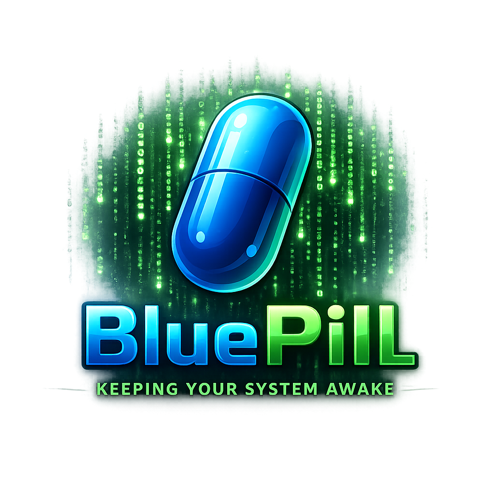

Python · Multiplataforma · Open SourcePequeña.
Pequeña.
Simple. Despierta.
BluePill mantiene tu sistema despierto simulando una cantidad mínima de actividad. Detecta cuando vuelves al computador, se aparta automáticamente y no deja servicios ni persistencia detrás.
“You take the blue pill — the story ends.”

Sin fricción
Hace una cosa. Y procura no molestarte.
BluePill nació para ser deliberadamente pequeño: ejecutas el script, mantiene el equipo activo y se aparta cuando detecta actividad real.
Actividad mínimaMovimientos discretos del cursor y pulsaciones de SHIFT en intervalos configurables.
Detecta que volvisteMouse y teclado reales pausan automáticamente su actividad durante unos segundos.
Salida globalEsc + E detiene BluePill desde cualquier lugar y confirma el cierre visualmente.
ConfigurableIdioma e intervalo de movimiento se ajustan mediante un pequeño config.json.
MultiplataformaPython, pyautogui y pynput. Sin instaladores ni servicios del sistema.
Sin telemetríaNo recopila ni transmite información. Todo ocurre localmente en tu equipo.
BluePill es código abierto.
Revisa el proyecto, ejecútalo desde Python o consulta cómo está construido.